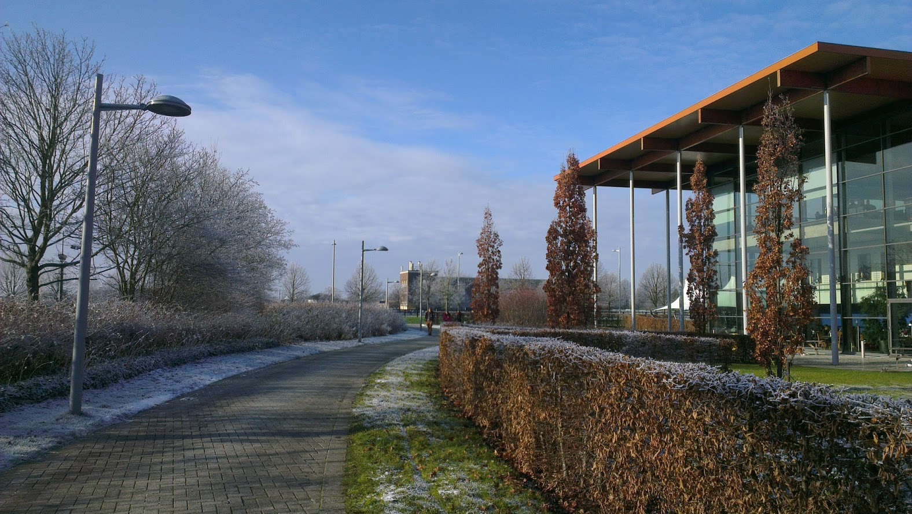

About Me
Hey.
I'm a computer science student at the University of Cambridge. I'm pretty good at Java, PHP, Javascript, and ML, and I dabble in Python and C#.
In my spare time I make websites and Android apps.
I am actively involved in the JCR (student union) committee for my college at university. I sit on committee meetings and run the college's student website as JCR Webmaster.
I also help on the college's entertainment committee as a one of two "techies" by setting up the sound systems and lighting for various student run parties and events. We recently ran the sound system for this year's Trinity Hall Garden Party which was attended by over 600 people.